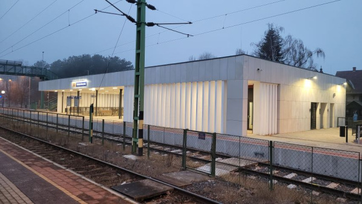
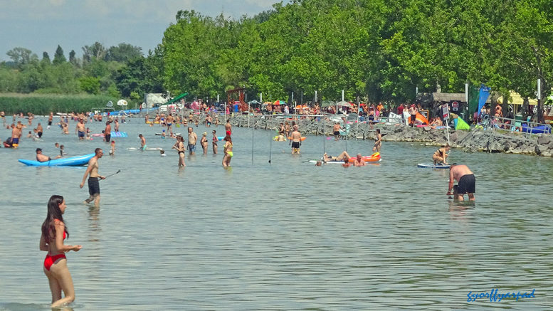
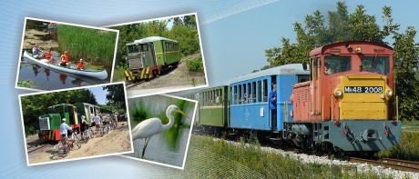
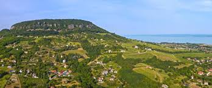

Warum lohnt sich ein Besuch in Balatonfenyves?
Balatonfenyves ist ein ruhiger Ferienort am südlichen Balatonufer. Der Bahnhof bringt dich nah an den Strand, zur Schmalspurbahn und zu entspannten Ausflügen in die Umgebung.

Entdecke Balatonfenyves mit einem Klick!


Balatonfenyves ist ein ruhiger Ferienort am südlichen Balatonufer. Der Bahnhof bringt dich nah an den Strand, zur Schmalspurbahn und zu entspannten Ausflügen in die Umgebung.


Ein langer, gepflegter Uferabschnitt mit flachem Wasser und schönem Balaton-Panorama. Schatten, Spielplatz und Strandangebote machen ihn ideal für einen ruhigen Sommertag.
Route planen
Die kleine Bahn ist eine besondere Attraktion der Region. Sie führt Richtung Imremajor und Pálmajor durch eine ruhige Landschaft und ist ein schönes Programm für Familien.
Route planen
Von Fonyód aus erreichst du mit der Fähre leicht das Nordufer und Badacsony. Der Ort ist bekannt für Wein, Basaltfelsen und schöne Ausblicke über den Balaton.
Route planen